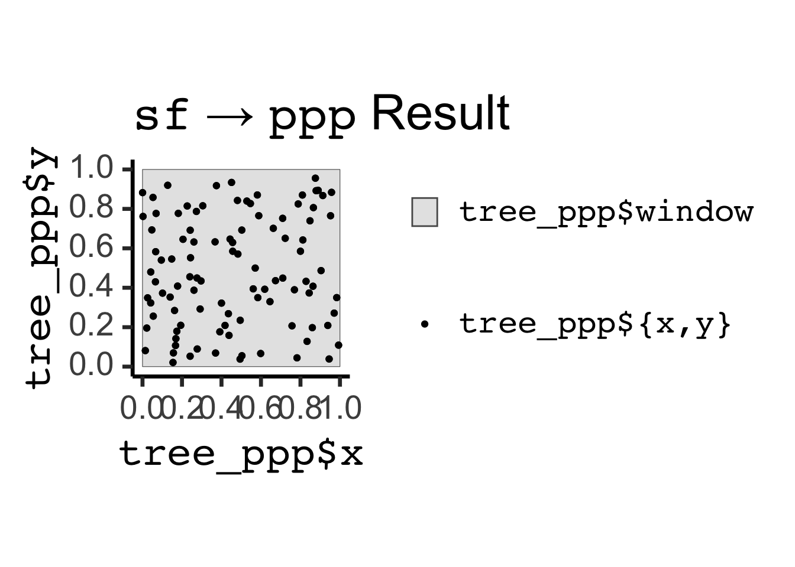
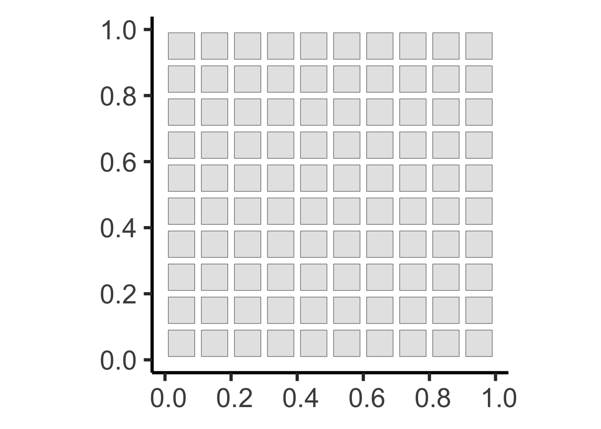

Code
source("../dsan-globals/_globals.r")
set.seed(6805)
library(tidyverse) |> suppressPackageStartupMessages()
library(sf) |> suppressPackageStartupMessages()
library(spatstat) |> suppressPackageStartupMessages()PPOL 6805 / DSAN 6750: GIS for Spatial Data Science
Fall 2024
ppp Objectsppp and sfsource("../dsan-globals/_globals.r")
set.seed(6805)
library(tidyverse) |> suppressPackageStartupMessages()
library(sf) |> suppressPackageStartupMessages()
library(spatstat) |> suppressPackageStartupMessages()spatstat!ppp Objectsspatstat book p. 41]sf objects, which contain data+geometries for any desired collection of \(N\) entities, ppp objects are required to have at least an observation window!sf Creation:
tree_df <- tibble::tibble(lon=runif(100,0,1), lat=runif(100,0,1), age=runif(100,0,1))
tree_sf <- sf::st_as_sf(
tree_df,
coords = c('lon', 'lat')
)
tree_sf |> head(4)| age | geometry |
|---|---|
| 0.0233144 | POINT (0.1487039 0.5640943) |
| 0.6882371 | POINT (0.1248064 0.8612631) |
| 0.3889197 | POINT (0.6370261 0.5268693) |
| 0.6638135 | POINT (0.5211425 0.4551448) |
ppp Creation:
pois_ppp <- spatstat.random::rpoispp(
lambda=100, win=spatstat.geom::square(1)
)
pois_pppPlanar point pattern: 91 points
window: rectangle = [0, 1] x [0, 1] unitsattributes(pois_ppp)$names[1] "window" "n" "x" "y" "markformat"pois_ppp$x |> head(4)[1] 0.5735346 0.7526621 0.8129999 0.7419696ppp \(\leftrightarrow\) sf Conversionppp to sf Conversion:
pois_sf <- pois_ppp |> sf::st_as_sf()
pois_sf |> head(4)| label | geom |
|---|---|
| window | POLYGON ((0 0, 1 0, 1 1, 0 … |
| point | POINT (0.5735346 0.6204983) |
| point | POINT (0.7526621 0.4205887) |
| point | POINT (0.8129999 0.6844816) |
pois_sf |> ggplot() +
geom_sf(data=pois_sf |> filter(label=="window"), aes(fill='grey')) +
geom_sf(data=pois_sf |> filter(label != "window"), aes(color='black')) +
theme_classic(base_size=28) +
scale_fill_manual(name=NULL, values=c("gray90"), labels=c("label == 'window'")) +
scale_color_manual(name=NULL, values=c("black"), labels=c("label == 'point'"))
sf to ppp Conversion:
square_sfc <- sf::st_polygon(list(
matrix(c(0,0,1,0,1,1,0,1,0,0), nrow=5, byrow=TRUE)
)) |> sf::st_sfc()
tree_ppp <- as.ppp(
sf::st_as_sfc(tree_sf),
W=as.owin(square_sfc)
)
tree_pppPlanar point pattern: 100 points
window: polygonal boundary
enclosing rectangle: [0, 1] x [0, 1] unitstree_ppp_sf <- tree_ppp |> sf::st_as_sf()
tree_ppp_sf |> ggplot() +
geom_sf(aes(fill='gray90')) +
geom_sf(data=tree_ppp_sf |> filter(label != "window"), aes(color='black')) +
theme_classic(base_size=28) +
scale_fill_manual(name=NULL, values=c("gray90"), labels=c("tree_ppp$window")) +
scale_color_manual(name=NULL, values=c("black"), labels=c("tree_ppp$x, tree_ppp$y"))

square_sf <- sf::st_as_sf(spatstat.geom::square(1))
grid_sf <- sf::st_as_sf(sf::st_make_grid(square_sf))
grid_buffer_sf <- grid_sf |> sf::st_buffer(dist=-0.01, singleSide = TRUE)
grid_buffer_sf |> ggplot() +
geom_sf() +
theme_classic(base_size=32)
grid_points <- sf::st_sample(grid_buffer_sf, size=rep(1,100))
grid_buffer_sf |> ggplot() +
geom_sf() +
geom_sf(data=grid_points) +
theme_classic(base_size=32)
grid_ppp <- as.ppp(grid_points, W=spatstat.geom::square(1))
grid_ppp |> sf::st_as_sf() |> ggplot() +
geom_sf() +
theme_classic(base_size=32)
r <- 0.05
pois_ppp <- rpoispp(150)
pois_sf <- pois_ppp |> sf::st_as_sf()
pois_sf |> ggplot() +
geom_sf() +
theme_classic(base_size=32)
age <- runif(npoints(pois_ppp))pair_dists <- pairdist(pois_ppp)
close <- (pair_dists < r)
earlier <- outer(age, age, "<")
kill_younger <- apply(close & earlier, 1, any)
kill_younger [1] FALSE FALSE FALSE FALSE FALSE TRUE FALSE FALSE FALSE FALSE FALSE TRUE
[13] TRUE TRUE FALSE TRUE FALSE FALSE FALSE TRUE TRUE FALSE FALSE TRUE
[25] TRUE FALSE FALSE FALSE FALSE TRUE FALSE FALSE FALSE TRUE FALSE FALSE
[37] TRUE FALSE TRUE TRUE TRUE FALSE FALSE FALSE TRUE TRUE FALSE TRUE
[49] TRUE TRUE TRUE FALSE TRUE FALSE FALSE FALSE FALSE FALSE FALSE FALSE
[61] TRUE TRUE FALSE FALSE TRUE FALSE FALSE FALSE FALSE FALSE FALSE TRUE
[73] FALSE TRUE TRUE FALSE TRUE FALSE TRUE FALSE FALSE TRUE FALSE FALSE
[85] TRUE FALSE TRUE TRUE TRUE FALSE TRUE TRUE TRUE TRUE TRUE TRUE
[97] FALSE FALSE TRUE FALSE FALSE FALSE FALSE FALSE FALSE FALSE TRUE FALSE
[109] TRUE TRUE FALSE FALSE TRUE FALSE FALSE FALSE TRUE TRUE FALSE TRUE
[121] FALSE FALSE FALSE TRUE TRUE TRUE FALSE FALSE TRUE FALSE FALSE TRUE
[133] FALSE FALSE FALSE FALSE FALSE TRUE TRUE FALSE TRUE TRUE TRUE FALSE
[145] TRUE TRUE TRUE FALSE TRUE TRUE TRUE FALSE FALSE TRUE FALSE FALSE
[157] FALSE FALSE TRUE FALSE FALSE TRUEpois_sf| label | geom |
|---|---|
| window | POLYGON ((0 0, 1 0, 1 1, 0 … |
| point | POINT (0.8440522 0.4045792) |
| point | POINT (0.6075552 0.9573304) |
| point | POINT (0.4987798 0.05945179) |
| point | POINT (0.3594386 0.8196886) |
| point | POINT (0.3192883 0.09144979) |
| point | POINT (0.3339818 0.3519297) |
| point | POINT (0.9960586 0.2352039) |
| point | POINT (0.5023149 0.1463213) |
| point | POINT (0.2031453 0.9329884) |
| point | POINT (0.3195649 0.7788332) |
| point | POINT (0.6374641 0.6609577) |
| point | POINT (0.866306 0.9406098) |
| point | POINT (0.3500509 0.9349553) |
| point | POINT (0.1386412 0.7930098) |
| point | POINT (0.2270282 0.5936232) |
| point | POINT (0.0007603387 0.8939324) |
| point | POINT (0.6639978 0.07291845) |
| point | POINT (0.04183751 0.7953254) |
| point | POINT (0.7692919 0.07420316) |
| point | POINT (0.8966734 0.5669067) |
| point | POINT (0.680173 0.1047129) |
| point | POINT (0.1029554 0.5973225) |
| point | POINT (0.678082 0.618449) |
| point | POINT (0.9426387 0.6377815) |
| point | POINT (0.1930129 0.2079815) |
| point | POINT (0.00687689 0.6295399) |
| point | POINT (0.7579211 0.8084702) |
| point | POINT (0.7935303 0.4226018) |
| point | POINT (0.1110797 0.4496461) |
| point | POINT (0.814119 0.7271356) |
| point | POINT (0.8333765 0.9778866) |
| point | POINT (0.4452431 0.236835) |
| point | POINT (0.3725147 0.9793204) |
| point | POINT (0.5484615 0.8496407) |
| point | POINT (0.7018008 0.8867349) |
| point | POINT (0.8467595 0.8799697) |
| point | POINT (0.7890788 0.8195922) |
| point | POINT (0.05701163 0.2473253) |
| point | POINT (0.3989724 0.9759088) |
| point | POINT (0.8151907 0.8496833) |
| point | POINT (0.9505571 0.3174932) |
| point | POINT (0.9718602 0.1682263) |
| point | POINT (0.1384563 0.04891575) |
| point | POINT (0.3898292 0.257269) |
| point | POINT (0.3245741 0.3526058) |
| point | POINT (0.413617 0.7345036) |
| point | POINT (0.2107101 0.02047935) |
| point | POINT (0.854959 0.2839288) |
| point | POINT (0.9669026 0.7876686) |
| point | POINT (0.8824994 0.1197676) |
| point | POINT (0.4415755 0.7620077) |
| point | POINT (0.3260848 0.3700436) |
| point | POINT (0.7920838 0.9057427) |
| point | POINT (0.994449 0.7551598) |
| point | POINT (0.3259606 0.8891382) |
| point | POINT (0.2505911 0.7855123) |
| point | POINT (0.1032182 0.3241149) |
| point | POINT (0.4791999 0.4080105) |
| point | POINT (0.9621832 0.9952471) |
| point | POINT (0.3692764 0.2047879) |
| point | POINT (0.6434393 0.4059393) |
| point | POINT (0.2513965 0.5776309) |
| point | POINT (0.5370047 0.8789696) |
| point | POINT (0.3944789 0.4572028) |
| point | POINT (0.2483371 0.9371469) |
| point | POINT (0.2904896 0.5697633) |
| point | POINT (0.102515 0.6681046) |
| point | POINT (0.2422721 0.3443844) |
| point | POINT (0.4246714 0.7562044) |
| point | POINT (0.8690251 0.31807) |
| point | POINT (0.7230102 0.6977789) |
| point | POINT (0.4551215 0.9631864) |
| point | POINT (0.8062577 0.5720152) |
| point | POINT (0.9050335 0.6909647) |
| point | POINT (0.8696058 0.6788358) |
| point | POINT (0.02830173 0.1118417) |
| point | POINT (0.2610091 0.5631683) |
| point | POINT (0.6405869 0.1636256) |
| point | POINT (0.5881439 0.411886) |
| point | POINT (0.5219839 0.7971373) |
| point | POINT (0.8112785 0.6867056) |
| point | POINT (0.4825621 0.1213937) |
| point | POINT (0.05407231 0.6873451) |
| point | POINT (0.9916155 0.04101249) |
| point | POINT (0.7303618 0.7671472) |
| point | POINT (0.2844643 0.3147539) |
| point | POINT (0.5109602 0.3519364) |
| point | POINT (0.02804164 0.1932839) |
| point | POINT (0.1829147 0.6975817) |
| point | POINT (0.8944286 0.1340684) |
| point | POINT (0.2587953 0.384634) |
| point | POINT (0.4715034 0.9724619) |
| point | POINT (0.1617179 0.1695654) |
| point | POINT (0.3770462 0.9643419) |
| point | POINT (0.8753687 0.05342488) |
| point | POINT (0.0351449 0.1315847) |
| point | POINT (0.02500562 0.438485) |
| point | POINT (0.9286492 0.5828054) |
| point | POINT (0.271905 0.9164324) |
| point | POINT (0.05726638 0.9948268) |
| point | POINT (0.5409185 0.9735742) |
| point | POINT (0.03613954 0.5372254) |
| point | POINT (0.1073173 0.8248645) |
| point | POINT (0.2387985 0.2209484) |
| point | POINT (0.484284 0.8799838) |
| point | POINT (0.1403762 0.3733169) |
| point | POINT (0.8219424 0.6994979) |
| point | POINT (0.8760778 0.01935782) |
| point | POINT (0.8569616 0.2893711) |
| point | POINT (0.2049525 0.3508076) |
| point | POINT (0.5670545 0.065923) |
| point | POINT (0.5311441 0.3319065) |
| point | POINT (0.5134974 0.373112) |
| point | POINT (0.9105045 0.6575949) |
| point | POINT (0.9524611 0.4945584) |
| point | POINT (0.6030209 0.5303973) |
| point | POINT (0.9571634 0.1390215) |
| point | POINT (0.9743885 0.7257924) |
| point | POINT (0.4755921 0.938798) |
| point | POINT (0.2591782 0.6020617) |
| point | POINT (0.5598867 0.4133512) |
| point | POINT (0.1093762 0.9244295) |
| point | POINT (0.7661875 0.9383103) |
| point | POINT (0.2337924 0.7940842) |
| point | POINT (0.7332217 0.9353052) |
| point | POINT (0.5392077 0.302269) |
| point | POINT (0.9126574 0.9752172) |
| point | POINT (0.5730841 0.7460921) |
| point | POINT (0.4806421 0.2713818) |
| point | POINT (0.6336667 0.3452001) |
| point | POINT (0.1970004 0.7140906) |
| point | POINT (0.07140515 0.2119658) |
| point | POINT (0.999474 0.6393323) |
| point | POINT (0.4685001 0.5590801) |
| point | POINT (0.3755957 0.744466) |
| point | POINT (0.2673546 0.8768559) |
| point | POINT (0.008979971 0.9035345) |
| point | POINT (0.4605666 0.3648888) |
| point | POINT (0.676427 0.1104338) |
| point | POINT (0.6728238 0.7625206) |
| point | POINT (0.430173 0.1319295) |
| point | POINT (0.3409953 0.261931) |
| point | POINT (0.367188 0.8111216) |
| point | POINT (0.4020791 0.1416748) |
| point | POINT (0.3702866 0.1976611) |
| point | POINT (0.1233179 0.5722665) |
| point | POINT (0.4842088 0.8011827) |
| point | POINT (0.5227724 0.2677362) |
| point | POINT (0.7920813 0.7556165) |
| point | POINT (0.3392952 0.7939991) |
| point | POINT (0.0736078 0.2124699) |
| point | POINT (0.00712279 0.3062591) |
| point | POINT (0.9154066 0.3369133) |
| point | POINT (0.7352944 0.9006699) |
| point | POINT (0.1624203 0.5013679) |
| point | POINT (0.09934338 0.1220048) |
| point | POINT (0.3927792 0.01115892) |
| point | POINT (0.86163 0.5111103) |
| point | POINT (0.8586673 0.4514921) |
| point | POINT (0.6287814 0.4000175) |
| point | POINT (0.04775872 0.4831958) |
| point | POINT (0.6090938 0.5011616) |
#pois_sf <- pois_sf |> mutate(kill_younger=kill_younger)
# pois_sf
# pois_sf |> ggplot() +
# geom_sf() +
# theme_classic(base_size=32)library(tidyverse)
library(spatstat)
set.seed(6805)
N <- 60
r_core <- 0.05
obs_window <- square(1)
# Regularity via Inhibition
#reg_sims <- rMaternI(N, r=r_core, win=obs_window)
cond_reg_sims <- rSSI(r=r_core, N)
# CSR data
#csr_sims <- rpoispp(N, win=obs_window)
cond_sr_sims <- rpoint(N, win=obs_window)
### Clustered data
#clust_sims <- rMatClust(kappa=6, r=2.5*r_core, mu=10, win=obs_window)
#clust_sims <- rMatClust(mu=5, kappa=1, scale=0.1, win=obs_window, n.cond=N, w.cond=obs_window)
#clust_sims <- rclusterBKBC(clusters="MatClust", kappa=10, mu=10, scale=0.05, verbose=FALSE)
# Each cluster consist of 10 points in a disc of radius 0.2
nclust <- function(x0, y0, radius, n) {
#print(n)
return(runifdisc(10, radius, centre=c(x0, y0)))
}
cond_clust_sims <- rNeymanScott(kappa=5, expand=0.0, rclust=nclust, radius=2*r_core, n=10)center_l_function <- function(x, ...) {
if (!spatstat.geom::is.ppp(x) && !spatstat.geom::is.fv(x)) {
stop("Please provide either ppp or fv object.")
}
if (spatstat.geom::is.ppp(x)) {
x <- spatstat.explore::Lest(x, ...)
}
r <- x$r
l_centered <- spatstat.explore::eval.fv(x - r)
return(l_centered)
}
cond_clust_sf <- cond_clust_sims |> sf::st_as_sf()
pines_plot <- cond_clust_sf |>
ggplot() +
geom_sf() +
dsan_theme("full")
ggsave("images/pines.png", pines_plot)
# density() calls density.ppp() if the argument is a ppp object
den <- density(cond_clust_sims, sigma = 0.1)
#summary(den)
png("images/intensity_plot.png")
plot(den, main = "Intensity λ(s)")
contour(den, add = TRUE) # contour plot
dev.off()
# And Kest / Lest
kest_result <- Kest(cond_clust_sims, rmax=0.5, correction="best")
lest_result <- center_l_function(cond_clust_sims, rmax=0.5)
png("images/lest.png")
plot(lest_result, main="K(h)")
dev.off()| First-Order | Second-Order | |
|---|---|---|
| Events considered individually \(\implies\) Intensity function \(\lambda(\mathbf{s})\) | Second-Order: Events considered pairwise \(\implies\) \(K\)-function \(K(\vec{h})\) | |
 |
 |